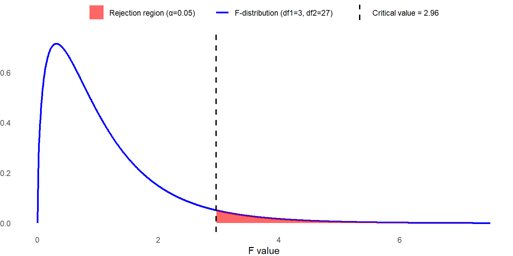
13 Chapter 13
Analyzing Change and Adjusting for Covariates
Learning Objectives
By the end of this chapter, you will be able to:
Explain the fundamentals of repeated-measures ANOVA, including its application in testing differences across multiple conditions or time points for the same participants, and recognize the advantages of within-subjects designs in reducing error variance.
Identify the assumptions underlying repeated-measures ANOVA, particularly the concept of sphericity, and apply appropriate corrections (e.g., Greenhouse-Geisser or Huynh-Feldt adjustments) when these assumptions are violated to ensure valid statistical conclusions.
Explain the purpose and application of Analysis of Covariance (ANCOVA), including how it controls for covariates to reduce error variance, and interpret ANCOVA results in the context of experimental and non-experimental research.
A repeated-measures ANOVA is used to determine whether there are significant differences between three or more related groups or measurements taken from the same participants under different conditions, at different time points, or across repeated trials. Similar to how a one-way between-subjects ANOVA extends the independent-samples t test, the one-way repeated-measures ANOVA extends the repeated-measures t test (also known as the related-samples t test or dependent-samples t test).
The term one-way indicates that only one factor is being tested, while within-subjects signifies that the same set of participants is measured across all conditions, eliminating between-subject variability and increasing statistical power.
An example of a longitudinal study would be measuring a group of college students at one point during each of their four undergraduate years to track changes in a dependent variable over time. This design is considered longitudinal because the same individuals are measured repeatedly across different time points. A repeated-measures ANOVA would be appropriate here.
In contrast, if students were only measured once and grouped based on their current year in college (e.g., first-year, sophomore, junior, senior), the study would be classified as a cross-sectional design rather than longitudinal. In this case, a repeated-measures ANOVA would not be appropriate, as each student would only contribute a single measurement rather than repeated observations over time.
Throughout this chapter, we will continue to discuss differences between groups, but it is important to remember that in a one-way repeated-measures ANOVA, we are examining the same individuals measured at different time points or under different conditions. Instead of thinking in terms of distinct groups of people, it is more accurate to consider them as groups of scores on a dependent variable, collected from the same participants. In a one-way repeated-measures ANOVA, there is only one group of individuals, and their responses are analyzed across multiple measurements.
13.1 Sources of Variation in the One-Way Repeated-Measures ANOVA
We already learned how to analyze group mean differences with the one-way between-subjects ANOVA; when data are collected from a different group of participants for each condition. We apply the same idea to test our hypotheses with the one-way within-subjects ANOVA. Either way, the test statistic has the same basic format:
\[ F = \frac{MS_{BG}}{MS_E} \]
In a repeated-measures ANOVA, we analyze the variance associated with group membership, where a ‘group’ represents a point in time or experimental condition. We also examine the variance that is not associated with group membership, known as error variance.
Unlike a one-way between-subjects ANOVA, a repeated-measures ANOVA introduces an additional source of variation: within-subject variability. This requires a slight adjustment in how we calculate degrees of freedom. While the between-groups variation remains the same, the error variance is divided into two components:
Variance due to individual differences (accounting for variability within participants).
Residual error variance (remaining unexplained variation).
This separation allows for a more precise estimation of effects while controlling for individual differences.
We will guide you through understanding each type of variation in a repeated-measures ANOVA, but we will not be performing any manual calculations. If you want to understand how to calculate the test statistics by hand, websites like Laerd Statistics provides a clear example.
13.1.1 Between-Groups Variation (Treatment Effect)
This component represents the variation between different conditions or time points in a repeated-measures ANOVA. You should already be familiar with this concept:
Calculate the mean for each group (condition or time point).
Subtract each group mean from the overall grand mean.
Square each difference and sum them up.
The resulting value is the sum of squares between groups (\(SS_{BG}\)), which quantifies how much variability in the dependent variable is due to differences between conditions rather than random error.
13.1.2 Within-Groups Variation (Error Variation)
The process of calculating within-groups variation begins similarly to between-groups variation:
Compute the mean for each group (condition or time point).
Subtract this mean from each individual’s score.
Square the differences and sum them up to obtain the sum of squares within groups (\(SS_{WG}\)).
However, in a repeated-measures ANOVA, we go one step further by splitting the error variance into two components, based on the two primary reasons why individual scores may differ within a group:
Measurement Error
No assessment is perfectly reliable—there may be sampling error, inconsistencies in measurement, or external factors affecting performance (e.g., a participant having a bad day). These random fluctuations introduce noise into the data, contributing to the error term.
Individual Differences
Some people naturally perform better or worse on a dependent variable, regardless of the time point or condition. These stable individual differences can influence results and complicate interpretations in between-subjects designs.
The second reason is a common challenge with educational research. If we are assessing the results of an intervention and we have three different classrooms of students, it is hard to know if different outcomes are due to our intervention or if the students are just different. But here is the magic of a repeated-measures ANOVA: this time, they are not different. They are the same people in every condition, or at every time period. Any differences in ability, motivation or anything else are the same across groups. Each person brings the same differences to each point in time or condition. We can quantify those differences and then remove them from the error term.
How do we do that? To remove individual differences from the error term, we calculate the sum of squares between persons (\(SS_{BP}\)) using the following steps:
Calculate each individual’s mean score across all time points or conditions.
Subtract this individual mean from the overall grand mean (the mean across all participants and conditions).
Square each difference and sum them up.
The result is the sum of squares between persons (\(SS_{BP}\)), which quantifies variability due to stable individual differences. By accounting for and removing this variation, a repeated-measures ANOVA isolates the true effect of the independent variable, improving statistical power and reducing error.
13.2 Degrees of Freedom in the Repeated-Measures ANOVA
We are going to keep reminding you of this, but everything we do with an ANOVA comes back to the concept of variance, and you should remember that \(variance = \frac{sum\,of\,squares}{degrees\,of\,freedom\,(df)}\). In other words, to get from multiple sum of squares values to actual variance estimates, we need to divide them by the degrees of freedom. With a between-subjects ANOVA we have two separate degrees of freedom but now with repeated-measures ANOVA we have three.
It is easier to understand this with an example. Imagine we have a study with 20 (\(n = 20\)) participants being tested at three points in time (\(k = 3\)), which means we have 60 total data points.
Degrees of Freedom for Example
| Source of variation | Formula | df value |
|---|---|---|
| Total | k*n − 1 | 59 |
| Between groups (Conditions) | k − 1 | 2 |
| Between persons (Participants/Subjects) | n − 1 | 19 |
| Within groups (Error) | (k − 1)(n − 1) | 38 |
The two rows in bold in the previous table are the degrees of freedom you use to find the critical value for the F test, and they are the ones you include when reporting results. Please note that the degrees of freedom listed here are only applicable when the sphericity assumption, which we will explain later in the chapter, is satisfied.
13.3 Calculating a Repeated-Measures ANOVA
It’s time to revisit fractions to understand why a within-subjects ANOVA generally has greater statistical power than a between-subjects ANOVA, and when it does not.
We begin with the familiar formula for the F statistic:
\[ F_{obt} = \frac{MS_{BG}}{MS_E} \]
The following table summarizes how these values are calculated, though it refers to “conditions” rather than “between-groups” for clarity. Understanding these components will help explain why within-subjects designs often result in greater power compared to between-subjects designs—and when that advantage might not hold.
| Source of Variation | SS | df* | MS | F |
|---|---|---|---|---|
| Between Groups (Conditions) | \(k - 1\) | \(\frac{SS_{BG}}{df_{BG}}\) | \(\frac{MS_{BG}}{MS_E}\) | |
| Between Persons | \(n - 1\) | \(\frac{SS_{Subjects}}{df_{Subjects}}\) | ||
| Within Groups (Error) | \((k - 1)(n - 1)\) | \(\frac{SS_E}{df_E}\) | ||
| Total | \(kn - 1\) |
Remember that a mean square is the same as a variance. To find \(MS_{BG}\), we find the \(SS_{BG}\) and divide by \(df_{BG}\), which is \(k – 1\). This is the value for the numerator of our fraction. The bigger this value is, the more likely we are to get a significant result.
\(MS_E\) is a little more complicated because we have to divide it into two parts. We first find the total \(SS_E\), and then we figure out how much of that is due to differences between people, which is the \(SS_{Subjects}\). We subtract out the part of the error that is due to people being different, and we are left with the \(SS_E\) that we truly consider error. We divide this by the \(df_E\), which is \((k – 1)(n – 1)\), and we have \(MS_E\) for the denominator of the fraction. The smaller this value is, the more likely we are to get a significant result.
Here is where we talk about power, and why the repeated measures ANOVA usually has more power than a between-subjects ANOVA. If the \(MS_E\) value is smaller, our fraction gets bigger, right? So how are \(MS_E\) values different in the two types of ANOVAs?
The big difference is that with a repeated-measures ANOVA, we can remove a major component of the error variance. All the error that is due to people being different gets removed from the equation altogether. This tends to make the error variance much smaller in a repeated-measures ANOVA, and therefore we have more statistical power.
The other difference, however, is in the degrees of freedom. In a between-subjects ANOVA, if we had three separate groups of 20 participants each, our total sample size would be 60. The degrees of freedom for error would be calculated as: \(df_E=n−k=60−3=57\). In the example repeated-measures ANOVA, we have a total of 20 participants, and the degrees of freedom for error are calculated as: \(df_E=(k−1)(n−1)=38\). Although the sum of squares for error (\(SS_E\)) is smaller in a repeated-measures design—because we remove variance due to individual differences—the \(MS_E\) is calculated by dividing \(SS_E\) by the smaller degrees of freedom (38 instead of 57). This trade-off slightly offsets the advantage of reducing \(SS_E\) but usually does not eliminate the overall gain in power.
Whether or not we end up with a more powerful test depends on if the reduction in \(SS_E\) more than compensates for the reduction in degrees of freedom for the error term. It does most of the time because we can usually take out quite a bit of error.
If participants behave consistently across all time points or conditions, meaning they differ from one another in the same way each time, then a repeated-measures ANOVA allows us to remove a substantial amount of error.
To understand this, recall how we determine how much error can be removed due to between-person differences. We do this by subtracting each individual’s average score across all conditions from the overall grand mean.
If a participant is consistently above the mean across all conditions, their overall average will also be above the mean, allowing us to partial out that difference completely.
Conversely, if a participant scores above the mean in one condition, below the mean in another, and close to the mean in a third, their overall average will be very close to the grand mean. In this case, there is little individual variation to remove.
Thus, the more consistent individuals are in their responses across conditions, the greater the reduction in error variance, increasing the statistical power of the analysis.
13.3.1 Assumptions of a Repeated-Measures ANOVA
Most of the assumptions for repeated-measures ANOVA should look familiar.
Normality: We assume the dependent variable is normally distributed in the population and the sample of individuals in our study. This assumption is particularly important when the sample size is small.
Independence within groups: Within each group, participants are independently observed within the group, and the score of one person will not be related to the score of another person in the group.
Homogeneity of variance: The variance of the dependent variable in each group (time period/condition) is the same.
Homogeneity of covariance: We assume that participants’ scores in each group are related because the same participants are observed across the groups/conditions. We also must assume that the extent to which they are related is consistent from one pair of groups to another. Removing the Between-Persons error from the total error only makes sense if the difference between an individual’s average score and the grand mean is representative of all the groups.
These last two assumptions are together referred to as sphericity. In short, sphericity refers to the condition where the variances of the differences between all combinations of related groups (levels of the independent variable) are equal. Violating the assumption of sphericity artificially increases the value of between-group differences, which makes it more likely that we will commit a Type I error and reject the null when there is no true difference in the population.
13.3.2 Conducting a Repeated-Measures ANOVA
We will once again use data from the vocabulary recall study examining the effect of learning strategies to walk through an example. However, this time, we will assume that the same group of students (n = 10) experienced all four learning strategies, rather than being assigned to only one. This repeated-measures design allows us to analyze how each student’s recall performance varies across the different strategies while controlling for individual differences.
| Repetition | Visualization | Technology-Aided Learning | Control |
|---|---|---|---|
| 13 | 17 | 17 | 10 |
| 12 | 15 | 18 | 12 |
| 6 | |||
| 12 | 15 | 16 | 9 |
| 11 | 17 | 16 | 12 |
| 9 | 18 | 20 | 4 |
| 11 | 18 | 21 | 11 |
| 11 | 14 | 18 | 9 |
| 14 | 15 | 20 | 8 |
| 13 | 17 | 19 | 9 |
| 8 | 18 | 17 | 5 |
| \(\bar{X} = 11.4\) | \(\bar{X} = 16.4\) | \(\bar{X} = 18.2\) | \(\bar{X} = 8.9\) |
Step 1: Determine the null and alternative hypotheses.
The hypotheses for a one-way repeated measures ANOVA are the same as those for the one-way ANOVA, which are as follows:
For k groups,
\[ H_0: μ_1 = μ_2 = … = μ_k \text{(all group means are equal) } \]
\[ H_a: \text{not all the } μ_i \text{ are equal(at least one group means differ from the others)} \]
In our example, k = 4 and thus,
\[ H_0: μ_1 = μ_2 = μ_3 = μ_4 \]
or
\[ H_0: μ_{Repetition} = μ_{Visual} = μ_{TechAid} = μ_{Control} \]
\[ H_a: \text{not all the }μ_i \text{are equal (at least one group mean differs from the others)} \]
Step 2: Set the criteria for a decision.
Let’s set the alpha level at 0.05. In our example, n = 10 with four conditions, so the sampling distribution of F ratio follows F distribution with \(df_{BG}=3\), \(df_E=(k−1)(n−1)=3×9=27\) when the sphericity assumption holds. We reject the null hypothesis when the obtained F statistic is larger than 2.96. Later, we will discuss how the dfs are adjusted for evaluating the F statistic when the sphericity assumption is violated to control the Type I error rate.
Step 3: Check assumptions and compute the test statistic.
We won’t go through all the data assumptions as you should already be familiar with some of them. Instead, we will focus on evaluating the sphericity assumption. We can begin this evaluation with a descriptive analysis, by examining the variance-covariance matrix.
The following table shows the variance and covariance matrix. The diagonal elements of the matrix, shaded in grey, represent the variances of each condition. If these values are substantially different, it may indicate a violation of sphericity. By looking at these values, we see that the variances among four conditions range from 2.27 to 7.21. The variance for the control condition (7.21) is much larger than the others, suggesting that it may contribute to a potential violation of sphericity.
| Learning Strategy | Repetition | Visualization | Technology-Aided Learning | Control |
|---|---|---|---|---|
| Repetition | 3.38 | -1.4 | 0.24 | 2.71 |
| Visualization | -1.4 | 2.27 | 0.58 | -1.29 |
| Technology-Aided Learning | 0.24 | 0.58 | 3.07 | -0.98 |
| Control | 2.71 | -1.29 | -0.98 | 7.21 |
Now, let’s examine the off-diagonal elements. Since the upper and lower triangles contain identical values, we will focus on the upper triangle. These values represent the covariances between different conditions. If the covariances vary substantially, it may indicate a violation of the sphericity assumption. In this case, the covariances range from -1.4 to 2.70, demonstrating considerable variation, particularly since some are positive while others are negative. This pattern suggests a potential violation of the sphericity assumption.
Next, we can formally test this assumption with Mauchly’s test for sphericity. The null and alternative hypotheses of Mauchly’s tests are as follows:
\(H_0\): The variances of the differences between conditions are equal.
\(H_a\): The variances of the differences between conditions are not equal. (At least one variance differs from the others.)
To meet this assumption, we aim to fail to reject the null hypothesis. The table below summarizes the result of Mauchly’s test, which can be obtained from common statistical software.
| Mauchly’s W | Approx. \(\chi^2\) | \(df\) | \(p\) | Greenhouse-Geisser \(\epsilon\) | Huynh-Feldt \(\epsilon\) | Lower Bound \(\epsilon\) |
|---|---|---|---|---|---|---|
| 0.445 | 6.247 | 5 | 0.286 | 0.666 | 0.856 | 0.333 |
Using \(\alpha = 0.05\), we fail to reject the null hypothesis. Although we observed some inconsistencies in variances and covariances among the four groups, these inconsistencies are not severe enough to violate the assumption. Therefore, we conclude that the sphericity assumption is satisfied in our example. The second half of the table (on the right side) tells us more about the violation, assuming one exists. The epsilon (\(\epsilon\)) values are estimates of the degree of sphericity in the population. If they are close to 1.0 then we expect the sphericity assumption has been met. However, if they are substantially less than 1.0, that indicates that the sphericity assumption is violated. The lower the epsilon value is, the worse the violation.
What happens if we violate the assumption of sphericity and obtain a significant result for Mauchly’s test (\(p < 0.05\))? Fortunately, when this assumption is violated, we can adjust the degrees of freedom for the omnibus F test to compensate.
This adjustment is made using epsilon (\(\epsilon\)), which is applied to both the numerator and denominator degrees of freedom by multiplying them by the epsilon value. Since higher degrees of freedom increase statistical power, reducing them (by multiplying by a value less than 1.0) makes it more difficult to detect a significant result.
Conceptually, this adjustment acknowledges that our assumptions have not been fully met, so we apply a more conservative approach before rejecting the null hypothesis. The more severe the violation, the lower the epsilon value, leading to a greater reduction in degrees of freedom, making it even harder to obtain statistical significance.
There are three commonly used methods for calculating epsilon, each based on different criteria, and we must decide which one to use. Similar to how we learned about multiple post hoc test options earlier in the book, the three epsilon values differ in how conservative/careful they are.
The Huynh-Feldt correction is the least conservative.
Lower-bound is the most conservative.
The Greenhouse-Geisser correction is somewhere in between.
Which one should you use? Typically, when epsilons are smaller than 0.75, we suggest using the Greenhouse-Geisser value. If they are above 0.75, it is safe to use the Huynh-Feldt correction. Fortunately, you do not need to do the math yourself because common statistical software will conduct the calculations for you.
Within-Subjects Effects
| Cases | Sphericity Correction | Sum of Squares | \(df\) | Mean Square | F | p | \(\eta^2\) |
|---|---|---|---|---|---|---|---|
| RM Factor | None (Sphericity Assumed) | 558.675 | 3 | 186.225 | 46.524 | <.001 | 0.838 |
| Greenhouse-Geisser | 558.675 | 1.998 | 279.687 | 46.524 | <.001 | 0.838 | |
| Huynh-Feldt | 558.675 | 2.567 | 217.642 | 46.524 | <.001 | 0.838 | |
| Lower-bound | 558.675 | 1 | 558.675 | 46.524 | <.001 | 0.838 | |
| Residuals | None (Sphericity Assumed) | 108.075 | 27 | 4.003 | |||
| Greenhouse-Geisser | 108.075 | 17.978 | 6.012 | ||||
| Huynh-Feldt | 108.075 | 23.102 | 4.678 | ||||
| Lower-bound | 108.075 | 9 | 12.008 |
First, observe the various degrees of freedom in the numerator for the repeated conditions. If sphericity is assumed, we use the standard calculation of k − 1, which in this case equals 3. However, when we apply different epsilon (\(\epsilon\)) values to adjust for violations of sphericity, the degrees of freedom decrease. At the lower bound, where ε = 0.333, the adjusted degrees of freedom become 3 × 0.333 = 1.0.
Why does the F statistic remain unchanged? If you refer back to the table at the beginning of the chapter, you’ll see that degrees of freedom are multiplied by the same epsilon value in both the numerator and denominator. This proportional adjustment ensures that the calculated F statistic stays the same and only the degrees of freedom change, affecting the significance threshold.
While statistical software handles these calculations automatically, it is important to understand how and why these adjustments are made when sphericity is violated.
13.3.2.1 Step 4: Find the p value and draw a conclusion and report your conclusion. {.unnumbered}
Since the data meet the sphericity assumption, we use the result with no adjustment for degrees of freedom and ignore the rest of the rows. As it turns out, our F statistic is much higher than the critical value of 2.96, so we can reject the null hypothesis. We can conclude there is a significant difference in means across recall conditions, \(F (3, 27) = 46.524\), \(p < .001\).
13.3.3 Measuring Effect Size
Once we have determined that group means vary significantly in the population, we next determine the size of this effect using either \(\eta^2\) or \(\omega^2\). In a between-subjects ANOVA, we divided \(SS_{BG}\) by \(SS_{Total}\) to get \(\eta^2\) and then corrected that slightly for \(\eta^2\). But remember, with a repeated-measures (or within-groups) ANOVA, we are partialling out some of the total variation because it is due to between-persons differences that are the same across groups. We distinguish these new measures of effect size from the original \(\eta^2\) and \(\omega^2\) by referring to them as partial \(\eta^2\) and partial \(\omega^2\).
To compute partial eta squared (\(\eta^2_p\)), we remove \(SS_{Persons}\) from \(SS_{Total}\). There are two ways to do this:
We can subtract \(SS_{between persons}\) from \(SS_{Total}\):
\[ \eta^2_p = \frac{SS_{BG}}{SS_{Total}-SS_{Persons}} \]
Or, we can add \(SS_{between groups}\) to \(SS_{error}\):
\[ \eta^2_p = \frac{SS_{BG}}{SS_{BG}+SS_E} \]
Remember that the original denominator was \(SS_{total}\). In this type of ANOVA, total variation is made up of variation between groups, variation between persons, and error variation. So, we can take the whole and subtract out the part we don’t want to include (option 1), or we can just add up the other two parts (option 2). You will get to the same place, but which one you choose depends on which values are easier to calculate. If software is doing the math for you, then it doesn’t matter.
In our example, it is easier to use option 2. Plug in the numbers and we get:
\[ \eta_p^2 = \frac{558.675}{558.675 + 108.075} = 0.837 \]
So partial eta squared for this analysis is 0.837, meaning that 83.7% of the variance in vocabulary recall can be explained by learning strategies.
We also previously learned that \(\eta^2\) tends to overestimate the effect, and the more conservative measure of the effect size is \(\omega^2\). For the repeated measures ANOVA, we use partial omega squared, \(\omega^2_p\). We have the same two basic options for calculating partial omega squared as with eta squared, but we will just use the second one since it is easier with our data:
\[ \omega_p^2 = \frac{SS_{BG} - (df_{BG} \cdot MS_E)}{SS_{BG} + SS_E + MS_E} \]
Notice that when the sphericity assumption is violated, we use \(df_{BG}\) in the numerator rather than \(k – 1\). If sphericity is assumed, these two values are the same.
\[ \omega_p^2 = \frac{558.675 - (3 \cdot 4.003)}{558.675 + 108.075 + 4.003} = 0.815 \]
We conclude that 81.5% of the variation in vocabulary recall is explained by the learning strategies applied.
13.4 Post Hoc Comparisons
As we previously learned, post hoc tests are computed following a significant ANOVA to determine which pair, or pairs, of group means significantly differ. Since we have four groups, we need to make multiple pairwise comparisons using a post hoc test to determine which means are significantly different. A good starting point is to examine the means plots in Figure 13.2 to identify any patterns in the mean differences. Visualizing the data in this way can provide an initial sense of trends before conducting post hoc tests.
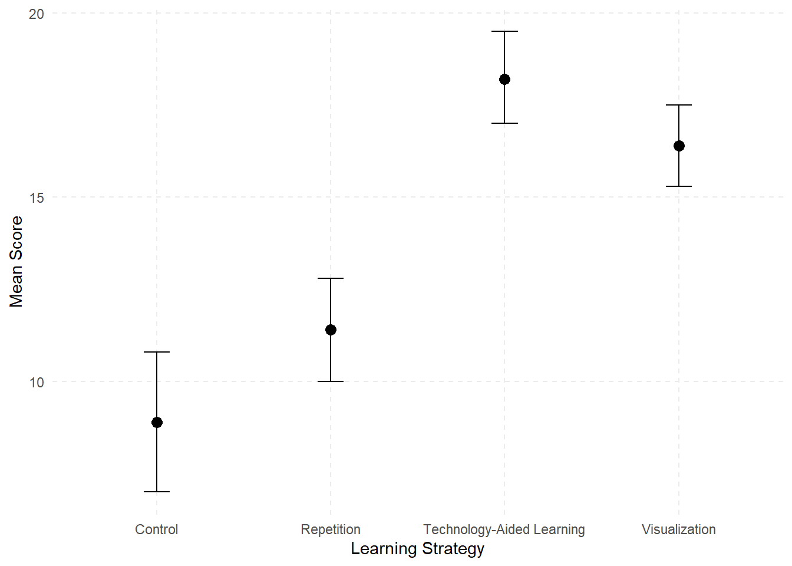
Remember, if we conduct multiple pairwise comparisons using repeated-measures t tests the likelihood of committing a Type I error increases. The Bonferroni procedure is best adapted for use following a significant repeated-measures ANOVA. This adjusts the alpha level for each pairwise comparison by dividing the familywise alpha by the total number of pairwise comparisons. In our case there are 6 unique pairs:
\[ \text{testwise alpha} = \frac{\text{familywise alpha}}{\text{total number of pairwise comparisons}} = \frac{0.05}{6} = 0.0083 \]
This means each pairwise comparison is evaluated at \(\alpha = 0.0083\), which is quite conservative. In fact, it would be too conservative if the number of groups were much higher, but we don’t have the same number of options in terms of other post hoc tests with a repeated-measures ANOVA, because they don’t use the related-samples \(t\) test.
Post Hoc Comparisons - RM Factor 1
| Group 1 | Group 2 | Mean Difference | Lower (95% CI) | Upper (95% CI) | SE | \(t\) | \(p_{bonf}\) |
|---|---|---|---|---|---|---|---|
| Repetition | Visualization | -5.000 | -7.547 | -2.453 | 0.895 | -5.588 | < .001 *** |
| Technology-Aided | -6.800 | -9.347 | -4.253 | 0.895 | -7.600 | < .001 *** | |
| Control | 2.500 | -0.047 | 5.047 | 0.895 | 2.794 | 0.057 | |
| Visualization | Technology-Aided | -1.800 | -4.347 | 0.747 | 0.895 | -2.012 | 0.326 |
| Control | 7.500 | 4.953 | 10.047 | 0.895 | 8.382 | < .001 *** | |
| Technology-Aided | Control | 9.300 | 6.753 | 11.847 | 0.895 | 10.394 | < .001 *** |
* p < .05, *** p < .001
Note. p value and confidence intervals adjusted for comparing a family of 6 estimates (confidence intervals corrected using the Bonferroni method).
When we run the analysis using statistical software, we find that both the Repetition and Control groups are significantly different from both the Visualization and Technology-aided strategies. However, there is no statistically significant difference between the Repetition and Control groups or between Visualization and Technology-aided strategies.
APA sample write-up: A study was conducted to examine the effect of learning strategy on the number of words recalled by 10 participants across four different learning strategies. The assumption of sphericity was assessed using Mauchly’s test, and since the assumption was met, no corrections to degrees of freedom were applied. The results of the one-way repeated measures ANOVA showed a significant main effect of learning strategy, \(F(3,27) = 46.52\), \(p < .001\). \(\omega^2 = .815\), indicating that the number of recalled words differed significantly across the four learning strategies. The partial omega squared value indicated a large effect, suggesting that a substantial proportion of the variance in vocabulary recall can be attributed to differences in learning strategy. Pairwise comparisons using Bonferroni-adjusted t tests revealed that both the Repetition and Control groups were significantly different from both the Visualization and Technology-Aided Learning strategies (\(p < .05\)). However, the Repetition and Control groups were not significantly different from each other after Bonferroni adjustment.
13.5 Analysis of Covariance (ANCOVA)
Analysis of Covariance (ANCOVA) is a statistical technique used to evaluate whether there are significant differences between groups on a dependent variable while statistically controlling for the effects of one or more continuous variables (called covariates). It offers a combination of multiple regression and analysis of variance. We believe the best place to start is to consider the relationship between ANOVA, ANCOVA, and multiple regression as these are all forms of the General Linear Model. The difference has to do with what independent variables you are using.
| Variable | ANOVA | ANCOVA | Multiple Regression |
|---|---|---|---|
| DV | Continuous normally distributed variable | Continuous normally distributed variable | Continuous normally distributed variable |
| + Categorical (grouping) variables | |||
| IV | Categorical (grouping) variable(s) | Categorical (grouping) variables + Continuous variables (covariates) | Continuous variables (interval or ordinal) + Dummy coded variables |
Notice that all three require a dependent variable that is continuous and normally distributed. A traditional ANOVA has categorical grouping variables (e.g., treatment/control, education level) for the independent variable(s). A traditional multiple regression has continuous predictors for independent variables. You can also include categorical variables in regression by using dummy variables, which is a way of turning a categorical variable into something that can be treated like it’s continuous in the regression model.
13.5.1 Why use ANCOVA?
We use ANCOVA if our primary focus is on the categorical grouping variable, but we want to include a continuous variable as a covariate. First, we need to understand what is meant by a “covariate” here. A covariate is a continuous variable that is included in the analysis to account for variability in the dependent variable that is not directly related to the independent variable(s). By controlling for the covariate, ANCOVA provides a clearer understanding of the relationship between the independent variable(s) and the dependent variable. Along with being a continuous variable, an appropriate covariate is:
correlated with your dependent variable;
not highly correlated with/predictive of your independent variable; and
not something you’re interested in interpreting as part of your analysis.
Remember that with any ANOVA, we are comparing the variance explained by our grouping variable(s) to error variance. Anything we can do to reduce the error variance gives our analysis greater power to detect a significant effect. ANCOVA allows us to subtract out part of the error variation that can be explained by a covariate. You are using the covariate to reduce the noise (error variation), so the differences associated with your actual independent variable(s) are easier to detect.
Now we should think about what would make a covariate an effective noise-reducer, and to do that we need to think about sources of variation. Figure 13.3 represents the total variation in our dependent variable. This is broken into two sources: variation due to our model, which potentially includes both main effects and interactions, and variation due to error.
If we include a covariate in the model, we want it to take away from the error variation without also reducing the between groups variation. This is why we want a covariate that is correlated with the dependent variable but not with the independent variable. Figure 13.4 represents our ideal scenario:
In figure 13.4 the covariate is highly correlated with our dependent variable, but not at all with the independent variables. It explains quite a bit of the error variation without removing any of the variation that we could explain with our independent variable. This combination is hard to come by in real life because more often covariates are related to each other, so we end up with something like this:
In this case, our covariate is associated with both the independent variable and the dependent variable. While we remove some of that noise (error variation), we also remove some of our between-groups variation.
Consider two examples. First, imagine an experiment where first-year college students are randomly assigned to either a control group or one of two intervention groups designed to improve study skills. Our goal is to determine whether participation in an intervention group is associated with an increase in first-semester GPA (our dependent variable).
However, other factors may also influence GPA. Even though students were randomly assigned, each group consists of different individuals who may have varying study habits and academic abilities. These pre-existing differences are unrelated to the intervention but add noise to the data, making it harder to detect meaningful effects.
By using ANCOVA (Analysis of Covariance), we can include high school GPA as a covariate. This allows us to control for prior academic achievement, removing any variation in first-semester GPA that can be explained by differences in high school GPA. As a result, the analysis focuses more directly on the impact of the intervention, increasing the likelihood of detecting a true effect.
Now, consider a different scenario where students were not randomly assigned to the control or intervention groups. Instead, university administrators used a “risk” score to determine placement: students with the highest risk scores were assigned to an intensive intervention, those with moderate risk scores received a less intensive intervention, and students with lower risk scores received no intervention.
In this case, high school GPA likely contributed to the risk score, meaning that including it as a covariate in an ANCOVA would not only reduce error variation but also reduce the variation between groups, which would undermine the analysis. This setup would be inappropriate for ANCOVA, as the covariate (high school GPA) is directly related to how students were assigned to groups rather than being an independent factor.
This example highlights a key requirement for selecting an appropriate covariate: it should be correlated with the dependent variable but not with the independent variable(s).
Now, consider the last bullet point about appropriate covariates. If the goal were to study the relationship between high school GPA and first-semester college GPA, then high school GPA should be treated as an independent variable rather than a covariate. However, in this analysis, we are not interested in explaining that well-established relationship. Instead, high school GPA is included only as a covariate to reduce error variation and increase statistical power when testing for differences in first-semester GPA based on the intervention groups.
13.5.2 Assumptions for ANCOVA
ANCOVA has the same assumptions as ANOVA: normality, independence, random sampling, and homogeneity of variance/covariance depending on if you’re using between-subjects or within-subjects factors. There are also two new assumptions.
Independence of the Covariate and the Treatment Effect
In a traditional ANCOVA, the covariate is associated with the dependent variable but not the independent variable. A violation of this assumption is the problem we just described. If your covariate influences the independent variable as well as the dependent variable, it won’t work as designed because it will reduce variation associated with your treatment/independent variable as well as error variation.
To check this, you can use a \(t\) test or a one-way ANOVA, depending on if your independent variable has two or more levels, to see if group membership predicts scores on the covariate. Going back to the prior example where students were randomly assigned to intervention or control groups, if we planned to use high school GPA as a covariate, we could start with a one-way ANOVA where intervention group was the independent variable and high school GPA was the dependent variable. If group membership did not significantly predict high school GPA, then that would be a good sign that the covariate was independent of the independent variable.
There are exceptions to this assumption depending on why you are using ANCOVA, which we will get to. The next assumption, however, is important.
Homogeneity of Regression Slopes
This assumption is also referred to as a lack of interaction between the effect of the covariate and group membership. It probably sounds similar to the first assumption, but they are actually different. When we use a covariate, we fit a regression line to the entire dataset, ignoring which group an individual belongs to. In our example, we assume that there is a common, constant relationship between high school GPA and first-semester college GPA. If it turns out that the relationship between the covariate and the dependent variable is different depending on group membership, then this overall regression line is inaccurate.
13.5.3 Another Use of ANCOVA: Adjusted Means
In an ideal scenario, all analyses would be based on randomized controlled trials (RCTs), allowing researchers to make causal claims and use covariates solely to increase statistical power. However, in the real world, education researchers often rely on non-experimental data or conduct correlational and observational studies.
Without random assignment, groups may differ on multiple factors, some of which are related to both the independent variable (IV) and the dependent variable (DV); these are known as confounding variables. One common approach to addressing these differences is to include confounding variables as covariates in an ANCOVA.
However, it is important to recognize the limitations of this method. Since it is impossible to identify, measure, and include all potential confounders, ANCOVA cannot fully substitute for ANOVA with random assignment. It can, however, help approximate the results of an experiment by statistically adjusting for known confounding variables.
When using ANCOVA in non-experimental research, it is crucial to avoid making causal claims, as you cannot definitively conclude that independent variable X causes dependent variable Y. Instead, the results should be interpreted as associational, acknowledging the potential influence of unmeasured confounders.
So, what would be an example of this kind of research question? Imagine we wanted to examine differences in GPA by gender, but prior research suggests that motivation levels also differ between male and female students. Since motivation could influence GPA, it serves as a potential confounding variable in our analysis.
To account for this, we could include motivation as a covariate in an ANCOVA, allowing us to examine the relationship between gender and GPA while controlling for differences in motivation.
We will explore this concept further using a hypothetical dataset with 12 cases to illustrate how ANCOVA adjusts for confounding variables.
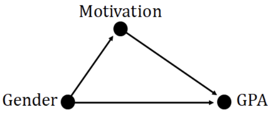
If we only looked at the simple mean difference in GPA by gender, we would overestimate the effect. Instead, we are interested in adjusted mean differences after controlling for the covariate of motivation.
To explore how ANCOVA can be used to find adjusted means and test the homogeneity of regression slopes, it is helpful to think of ANCOVA as a special type of multiple regression. It is considered “special” because our grouping variable (gender) is represented using dummy coding, a technique previously discussed.
Since we only have two levels (male and female), we need only one dummy variable, with males coded as 0 and females coded as 1. This allows us to include gender as a predictor in the regression model while ensuring that differences between groups are appropriately quantified.
To build on this, we will first examine a simple regression model using gender as the independent variable and GPA as the dependent variable. Our focus will be on interpreting the regression coefficients (B), which are typically provided in statistical software output tables.
| Predictor | B | SE | t | p |
|---|---|---|---|---|
| Intercept | 2.450 | 0.154 | 15.95 | <0.01 |
| Gender | 0.550 | 0.217 | 2.53 | 0.03 |
Therefore, our prediction equation is as follows:
\[ \hat{Y}_i = 2.45 + 0.55(x_i) \]
If we want to know the mean GPA for each group, we just substitute the appropriate value for X and solve the equations.
For male students, X = 0.
\[ Y - male = 2.45 + 0.55(0) = 2.45 \]
For female students, X = 1.
\[ Y - female = 2.45 + 0.55(1) = 3.00 \]
Now we have the unadjusted mean GPAs for each group. But remember, we have reason to believe that motivation is a confounding variable that is associated with both gender and GPA. We can test whether our covariate (motivation) is independent of our grouping variable (gender) with a simple two-independent samples t test (two-tailed, α = 0.05). We used a statistical software package to run the analysis and confirmed motivation scores are significantly different between male and female students, \(t(10) = -4.82\), \(p < .05\).
If we had randomly assigned students to two groups and were only trying to reduce error variation, then motivation would not be a good covariate to use. However, in this case, we are using ANCOVA to estimate adjusted means rather than to reduce error variation. We know that motivation is associated with our independent variable, and we are using it as a covariate to try to control for the effect of motivation on GPA to get a more accurate estimate of the effect of gender on GPA.
To examine the relationship between X and Y, controlling for C (our covariate), we use a multiple regression equation using both X and C to predict Y. This is the ANCOVA model (in regression form), which can be written as: \(\hat{Y}_I = a+ b_1X_i+ b_2C_i\).
The table below summarizes the regression coefficients.
| Predictor | B | SE | t | p |
|---|---|---|---|---|
| Intercept | 1.547 | 0.771 | 2.006 | 0.076 |
| Gender | 0.163 | 0.388 | 0.420 | 0.684 |
| Motivation | 0.097 | 0.081 | 1.194 | 0.263 |
Therefore, our new prediction equation is as follows:
\[ \hat{Y}_I = 1.55+0.162(X_i)+0.097(C_i) \]
This time, the output tables tell us that neither the overall model nor Gender on its own are significant predictors of GPA. The relationship between X and Y has changed after controlling for C. Controlling for the covariate means that if all students had the same motivation scores, what differences in GPA would we see based on gender? To find the adjusted mean GPA by group, we substitute the grand mean of C (11.33) in the equation along with substituting in the appropriate values of X.
For male students, X = 0.
\[ \bar{Y}_{male} = 1.55 + 0.163(0) + 0.097(11.33) = 2.65 \]
For female students, X = 1.
\[ \bar{Y}_{female} = 1.55 + 0.163(1) + 0.097(11.33) = 2.81 \]
You can see that while female students still have higher adjusted mean GPAs than male students, the gap is narrower. This is consistent with the results of the regression analysis showing no significant difference in GPA by gender after controlling for motivation. We are no longer rejecting the null hypothesis, so it is possible there is actually no difference in the population. We will get back to the actual ANCOVA analysis soon, but first a little more about regression so we can investigate the issue of homogenous regression slopes.
13.5.4 Homogeneity of Regression Slopes
The equations we just created were for adjusted mean values by group, and they used the grand mean for the covariate. It is possible to create separate prediction equations for each group that could include any value of the covariate. If we look back at the general prediction equation, we can substitute in appropriate values for X (either 0 or 1) to get these:
Male students:
\[ \hat{Y}_{male\,i} = 1.55+ 0.097(C_i) \]
Female students:
\[ \hat{female\,i} = 1.71+ 0.097(C_i) \]
These two equations are different only in the value of the intercept; the slopes are the same. This means the regression lines for the covariate are parallel, but the slope for male students is shifted a little lower on the Y-axis. Figure 13.7 shows the regression lines, where the dotted line represents the equation for female students and the solid line represents the equation for male students.
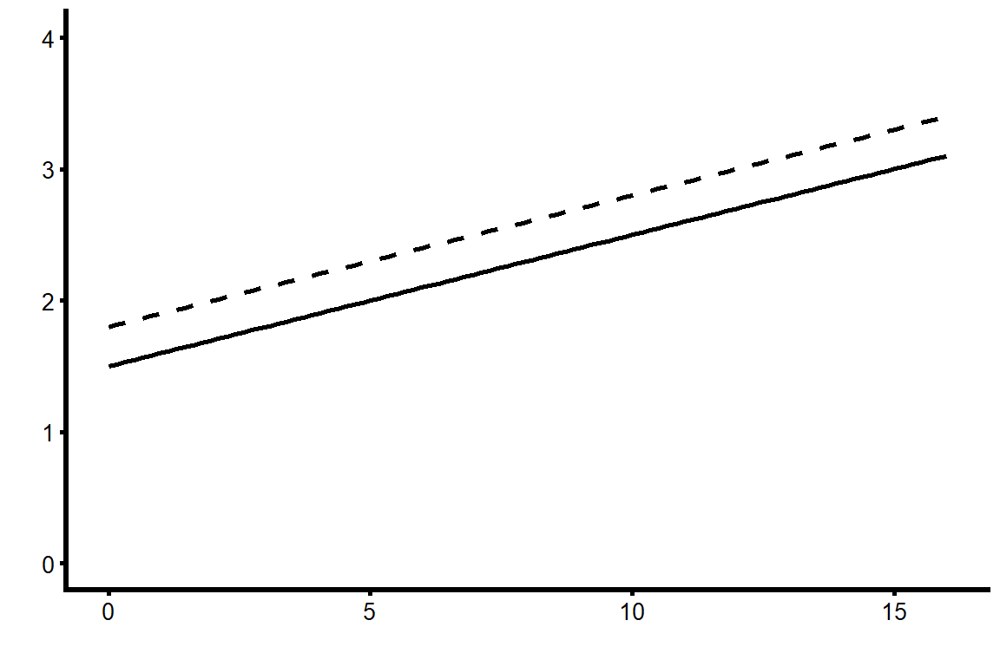
This is an example of how we can violate the first ANCOVA assumption but not the second, which is much more important. We deliberately chose a covariate that we knew was associated with our independent variable because we wanted to control for motivation to find adjusted mean GPA by gender. But even though motivation was associated with gender in this dataset, we are still assuming the effect of motivation on GPA is not different based on gender.
What would it look like if we violated this assumption? If there was an interaction between our covariate and our independent variable such that the effect of motivation on GPA varied by gender, then the actual regression lines might look more like those displayed in figure 13.8.
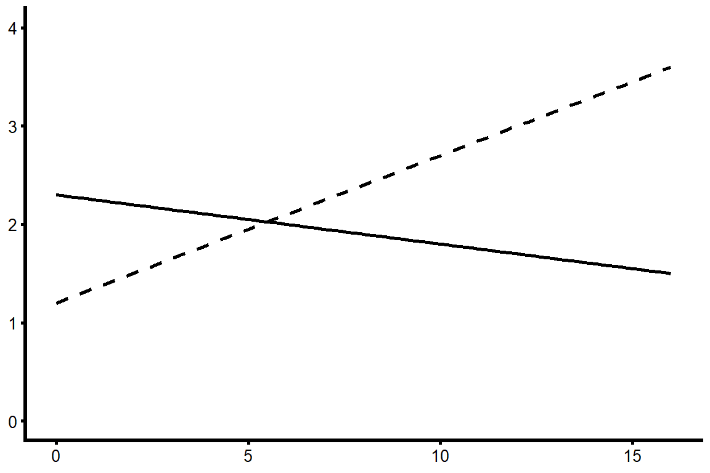
If higher levels of the covariate led to higher scores on the dependent variable for one group, but lower scores for another group, then this covariate would be meaningless. When this kind of interaction is present, we can’t make a general statement about the effect of the covariate nor about adjusted mean values by group.
13.5.5 Testing the Interaction
To find out if there is an interaction between X (our grouping variable) and C (our covariate) and test the homogeneity of regression slopes, we need to add an interaction term to the regression equation and test it for significance. The interaction term is formed by multiplying the raw scores for the independent variable by the raw scores for the covariate: \(X_i \times C_i\).
This leads to the full model we use to test the interaction term:
\[ \hat{Y}_I = a + b_1X_i + b_2C_i+ b_3(X_i∗C_i) \]
There are a few things you need to keep in mind about that equation:
You can’t just test the interaction effect on its own. You need to include both the independent variable and the covariate in the model separately or else the interaction might show up as significant only due to the main effects of the two variables.
We hope to find that the interaction is not significant. Our null hypothesis is that β3 = 0.
If we do manage to retain the null, we need to re-run the model without the interaction effect, because the other coefficients will change once we remove it.
If the interaction term is significant, then we need to keep it in the model. We will no longer have an ANCOVA model, instead we have a multiple regression model with an interaction.
13.5.6 More Complex ANCOVAS
The example we’ve been using is the simplest possible ANCOVA, with only one independent variable that has only two levels. If you are conducting a one-way ANCOVA with a factor that has more than two levels, a factorial ANCOVA with multiple factors, or an ANCOVA with multiple covariates, the fundamental principles remain the same. However, these more complex models require additional steps upfront to thoroughly test assumptions before proceeding with the analysis.
Grouping Variable with > 2 Levels
Imagine if we wanted to use an independent variable with three levels rather than two, such as education level: high school graduates, some college experience, and college graduates. The main difference is that now we must make sure the effect of our covariate is the same across all three groups, which means testing two interaction terms.
Since there are three groups, we need two dummy variables. Let’s use high school graduates as the reference group, which means there is one dummy variable (\(X_1\)) to represent “some college,” and a second dummy variable (\(X_2\)) to represent “college graduate.” Each dummy variable is coded 0/1, so the following table shows how individuals in each group would be coded on the two variables:
| Education Level | \(X_1\) | \(X_2\) |
|---|---|---|
| HS Graduate | 0 | 0 |
| Some College | 1 | 0 |
| College Graduate | 0 | 1 |
Our overall prediction model will be:
\[
\hat{Y}_I = a + b_1X_{1i} + b_2X_{2i}+ b_3C_i
\]
where \(b_1\) represents the difference in Y between individuals with some college and high school graduates, and \(b_2\) represents the difference in \(Y\) between college graduates and high school graduates; \(a\) indicates the adjusted mean of the high school graduate reference group.
To conduct the ANCOVA analysis, we have to check the homogeneity of regression slopes by testing interaction effects. If there are three categories in the IV and two dummy variables, we also have two interaction terms (i.e., each dummy variable × the covariate), and then test the full model with both interaction terms to see if either one was significant:
\[ \hat{Y}_I = a + b_1X_{1i} + b_2X_{2i}+ b_3C_i + (b_4X_{1i}*C_i) + (b_5X_{2i}*C_i) \]
In this case, the hypotheses we’re testing are:
\[ H_0: \beta_4 = \beta_5 = 0 \]
\[ H_A: \text{At least one of the beta coefficients is not zero.} \]
If both interaction terms are not significant, you can use the covariate. The only other difference from our earlier example is that if there are significant group differences, you will need to conduct post hoc tests to find out which groups are significantly different from each other.
13.5.7 Factorial ANCOVA
As your analysis becomes more complex, so does the work required to test assumptions. When conducting an ANCOVA with multiple factors or covariates, you need to address two key considerations:
Correlation Between the Covariate and the Dependent Variable (DV)
The covariate must be correlated with the DV within each combination of groups of the independent variables. For example, in a 2×2 ANCOVA, you must check this correlation separately for all four groups (cells).
Testing for Interaction Effects
Here, the focus is on whether the covariate interacts with the treatment conditions, not the typical interaction between independent variables (IVs). Just as in cases where a factor has more than two levels, you need to test the interaction between the covariate and each dummy variable for every factor.
Note that in a 2×2 ANCOVA, even though there are four groups, you only have one dummy variable, meaning there are only two interaction effects to check.
13.5.8 Multiple Covariates
If you include two covariates in your ANCOVA, you must perform all the same assumption tests as you would for a single covariate—but twice (once for each covariate). While adding covariates can help control for additional factors, it is important to be cautious about overfitting the model.
Every additional variable reduces your degrees of freedom, so including a weak covariate—one that does little to reduce error variation—can actually decrease the statistical power of your analysis rather than improve it.
As always, the selection of covariates should be guided by theory and prior research to ensure that they meaningfully contribute to the model rather than simply increasing complexity.
13.6 Summary
You are probably going to have to read this more than once before it all makes sense, so here is a quick summary to reorient yourself before you go back to the start.
There are two main reasons you would use a covariate.
If you’re using a classic experimental design with random assignment to groups, you would use ANCOVA to reduce error variance, and therefore have greater power to detect a significant difference.
If you are using non-experimental data, you might use ANCOVA to adjust group means by controlling for a confounding variable.
In either case, you are not interested in interpreting the results of the covariate; it’s only there to clarify the relationship between the IV and the DV.
There are two new assumptions for ANCOVA.
Independence of the covariate and the treatment effect: Ideally, your covariate is related to your DV but not to your IV. You test this assumption by using either an independent samples t test (if your IV has two groups) or a one-way ANOVA (if you have more than two groups), with the covariate as your dependent variable. If the result is not significant, you can proceed because your IV does not predict the covariate.
Homogeneity of regression slopes: We need the covariate to have the same effect on the DV for every level or group of your IV. We test this by computing a new variable to represent the interaction between the IV and the covariate. Then we run a multiple regression model with the IV, the covariate, and the interaction term as predictors of the DV. If the interaction term is not significant, we can proceed.
The concept of ANCOVA can sometimes be difficult to understand. If you want another explanation, this YouTube video by Foltz (2017) has been helpful to our students.
Analyzing Change and Adjusting for Covariates in R
In this section, we demonstrate how to implement two of the central methods from this Chapter in R: Repeated-Measures ANOVA and Analysis of Covariance (ANCOVA). Both approaches help educational researchers make more nuanced conclusions: the first by analyzing within-subject change across multiple measures, the second by adjusting for covariates to clarify between-group differences.
library(haven)
data <- read_sav("chapter13/chapter13data.sav") 1 Repeated-Measures ANOVA
We will examine U.S. students’ math performance across three content areas from PISA:
PV1MPRE: Reasoning
PV1MCQN: Quantity
PV1MCSS: Space & Shape
These serve as within-subject factors (each student is measured in all three domains). For a between-subjects factor, we will include MATHMOT - Motivation to Do Well in Mathematics, a binary categorical variable. A value of 1 indicates that the student reported being more motivated to do well in mathematics than in other subjects, and 0 indicates they are not.
1.1 Preparing the data
# Load required packages
library(tidyverse)
library(ez)
# Select variables
rm_data <- data %>%
select(ID = CNTSTUID, PV1MPRE, PV1MCQN, PV1MCSS, MATHMOT) #CNTSTUID - Student ID
# Reshape to long format for ezANOVA
rm_long <- rm_data %>%
pivot_longer(cols = c(PV1MPRE, PV1MCQN, PV1MCSS),
names_to = "ContentArea",
values_to = "Score")
head(rm_long |> as.data.frame()) ID MATHMOT ContentArea Score
1 84000041 1 PV1MPRE 557.718
2 84000041 1 PV1MCQN 582.587
3 84000041 1 PV1MCSS 586.034
4 84000231 0 PV1MPRE 476.778
5 84000231 0 PV1MCQN 408.350
6 84000231 0 PV1MCSS 394.7141.2 Running the repeated-measures ANOVA
library(dplyr)
# Repeated measures ANOVA with MATHMOT as between-subjects factor
anova_res <- ezANOVA(
data = rm_long,
dv = Score, # dependent variable
wid = ID, # participant ID
within = .(ContentArea), # within-subject factor
between = .(MATHMOT), # between-subject factor
type = 3, # Type III SS, to address unbalanced design
detailed = TRUE # returns extra information
)
# Extract the ANOVA table from ezANOVA
anova_table <- anova_res$ANOVA
# Compute partial eta squared for each effect
anova_table$eta_p2 <- with(anova_table, SSn / (SSn + SSd))
anova_table_rounded <- anova_table |>
mutate(across(where(is.numeric), ~ round(.x, 3)))
anova_table_rounded Effect DFn DFd SSn SSd F p p<.05
1 (Intercept) 1 4008 2.471806e+09 102205168 96932.474 0.000 *
2 MATHMOT 1 4008 1.060816e+05 102205168 4.160 0.041 *
3 ContentArea 2 8016 3.553135e+05 11491923 123.922 0.000 *
4 MATHMOT:ContentArea 2 8016 5.014659e+03 11491923 1.749 0.174
ges eta_p2
1 0.956 0.960
2 0.001 0.001
3 0.003 0.030
4 0.000 0.0001.2.1 Between-Subjects Factor: MATHMOT
Students with higher motivation in mathematics (MATHMOT) had significantly different scores across the math content areas overall, \(F(1, 4008) = 4.16, \, p = .041\).
The partial \(\eta^2\) (eta_p2) is .001, indicating that although the effect is statistically significant, the effect size is extremely small (about 0.1% of the variance explained). This reveals that large samples can make very small effects look statistically significant.
1.2.2 Within-Subjects Factor: ContentArea
There is a significant effect of Content Area on math scores, \(F(2, 8016) = 123.92\), \(p < .001\), indicating that students’ performance varies across the three content areas.
The partial \(\eta^2\) is .030, suggesting that about 3% of the variance in scores can be attributed to differences between content areas. This is a larger but still modest effect size.
1.2.3 Interaction: MATHMOT × ContentArea
The interaction between MATHMOT and Content Area is not significant, \(F(2, 8016) = 1.75, \, p= .174\). This means that although motivated students scored differently overall, their relative performance patterns across the three content areas were not significantly different from less motivated peers. In other words, motivation shifts the overall level but not the shape of the profile.
1.2.4 Assumption Check: Sphericity
Mauchly’s Test (\(W = 0.983, \, p < .001\)) is significant. This suggests the assumption of sphericity is formally violated: the variances of the differences between content areas are not perfectly equal. However, with such a large sample (\(N > 4000\)), Mauchly’s test is extremely sensitive — even tiny deviations from sphericity can become statistically significant.
As the chapter explained, we apply corrections. For the effect of content areas: Greenhouse-Geisser (p[GG]) \(p < .001\); Huynh-Feldt (p[HF]) \(p < .001\). Both lead to the same conclusion: the ContentArea effect is robustly significant, even after adjustment.
1.3 Post Hoc Comparisons
1.3.1 Visualize the Means
# Mean plot by ContentArea
library(ggplot2)
means_plot <- rm_long %>%
group_by(ContentArea) %>%
summarise(mean_score = mean(Score, na.rm = TRUE),
se = sd(Score, na.rm = TRUE) / sqrt(n()))
means_plot # A tibble: 3 × 3
ContentArea mean_score se
<chr> <dbl> <dbl>
1 PV1MCQN 458. 1.51
2 PV1MCSS 450. 1.36
3 PV1MPRE 461. 1.41# Mean plot (line plot) with error bars
ggplot(means_plot, aes(x = ContentArea, y = mean_score, group = 1)) +
geom_line(color = "skyblue", size = 1) +
geom_point(size = 3, color = "darkblue") +
geom_errorbar(aes(ymin = mean_score - se, ymax = mean_score + se),
width = 0.1, color = "darkblue") +
scale_y_continuous(limits = c(445, 465)) + # adjust y-axis range
scale_x_discrete(labels = c("PV1MPRE" = "Reasoning",
"PV1MCQN" = "Quantity",
"PV1MCSS" = "Space & Shape")) +
ylab("Mean Math Score") +
xlab("Content Area") +
theme_minimal() +
ggtitle("Mean Math Scores Across Content Areas") 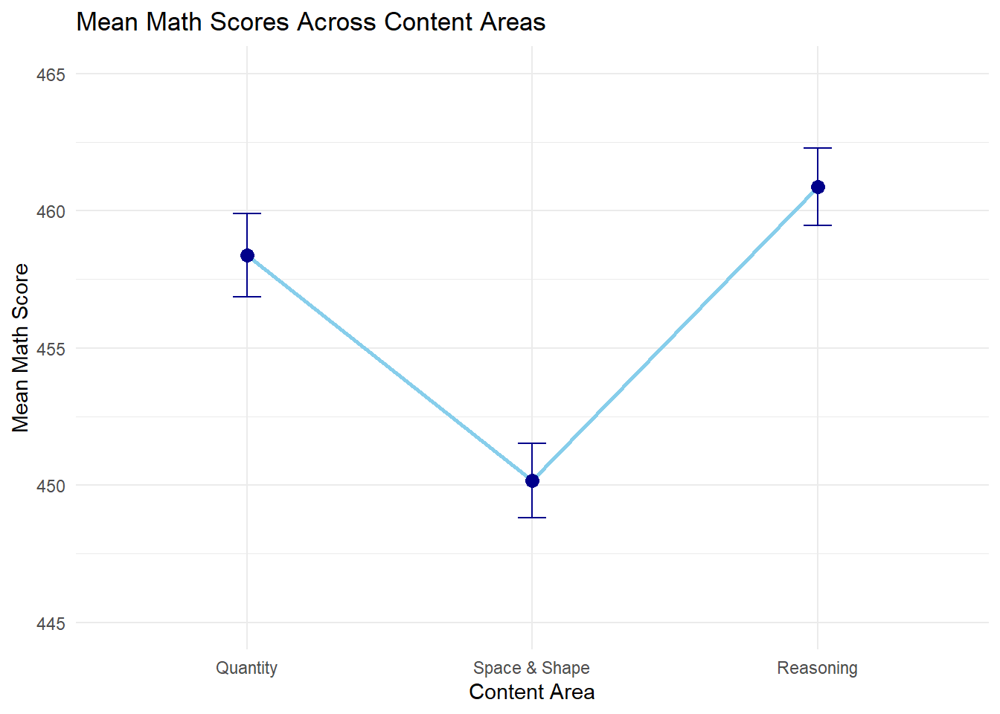
1.3.2 Pairwise Comparisons (Repeated-Measures t-tests)
We use pairwise.t.test() with Bonferroni correction. Since the data are within-subjects, we need to specify paired = TRUE.
# Pairwise repeated-measures t-tests
pairwise_results <- pairwise.t.test(rm_long$Score,
rm_long$ContentArea,
paired = TRUE,
p.adjust.method = "bonferroni")
pairwise_results
Pairwise comparisons using paired t tests
data: rm_long$Score and rm_long$ContentArea
PV1MCQN PV1MCSS
PV1MCSS <2e-16 -
PV1MPRE 0.0032 <2e-16
P value adjustment method: bonferroni From the line plot, students scored lowest in Space & Shape (450), higher in Quantity (458), and highest in Reasoning (461). The pairwise t-tests confirm that all three pairwise differences are statistically significant after Bonferroni correction (\(p < .001\) for all comparisons), although the largest gap is between Space & Shape and the other two areas.
2 ANCOVA
Now we turn to ANCOVA， where the focus is where the focus is comparing the three types of schools on math performance, while controlling for growth mindset:
DV: PV1MATH (overall math achievement)
IV: SC014Q01TA (School type: 1 - religious, 2 - non-profit, 4 - government)
Covariate: GROSAGR (Growth Mindset)
2.1 Running ANCOVA
library(emmeans) # convert School Type to factor
data$SchoolType <- factor(data$SC014Q01TA,
levels = c(1,2,4),
labels = c("Religious", "Non-profit", "Government"))
data$SchoolType |> table() # check distribution
Religious Non-profit Government
97 181 4013 # ANCOVA model
ancova_model <- aov(PV1MATH ~ SchoolType + GROSAGR, data = data)
summary(ancova_model) Df Sum Sq Mean Sq F value Pr(>F)
SchoolType 2 712007 356003 41.68 <2e-16 ***
GROSAGR 1 1611370 1611370 188.65 <2e-16 ***
Residuals 3816 32594220 8541
---
Signif. codes: 0 '***' 0.001 '**' 0.01 '*' 0.05 '.' 0.1 ' ' 1
732 observations deleted due to missingness#Post-hoc Comparisons of adjusted means for School Type
emmeans(ancova_model, pairwise ~ SchoolType) $emmeans
SchoolType emmean SE df lower.CL upper.CL
Religious 473 10.10 3816 453 493
Non-profit 405 7.20 3816 391 419
Government 469 1.55 3816 466 472
Confidence level used: 0.95
$contrasts
contrast estimate SE df t.ratio p.value
Religious - (Non-profit) 68.20 12.40 3816 5.484 <0.0001
Religious - Government 3.82 10.30 3816 0.372 0.9265
(Non-profit) - Government -64.38 7.36 3816 -8.745 <0.0001
P value adjustment: tukey method for comparing a family of 3 estimates 2.1.1 School Type Effect
After controlling for growth mindset, there are still significant differences in math scores between school types, \(F(2,3816)=41.68, \, p<.001\). This means that even if students had the same level of growth mindset, school type is still associated with different mean math achievement.
From the post-hoc comparison, after controlling for growth mindset (i.e., adjusted means):
Religious schools (\(M = 473\)) scored significantly higher than Non-profit schools (\(M = 405\)), \(p < .001\).
Government schools (\(M = 469\)) also scored significantly higher than Non-profit schools, \(p < .001\).
There was no significant difference between Religious and Government schools (mean difference \(= 3.82, p = .93\)).
Check the One-Way ANOVA results from Chapter 10 to see how these comparisons differ before controlling for growth mindset.
2.1.2 Growth Mindset Effect (Covariate)
Growth mindset has a significant effect on math achievement, \(F(1,3816) = 188.65, \, p < .001\).
2.2 Checking assumptions
2.2.1 Independence of covariate and IV
Recall that one key assumption of ANCOVA is that the covariate (growth mindset) is associated with the dependent variable (math achievement) but not the independent variable (school type). We have shown that growth had a significant effect on math achievement. Now we check whether growth mindset differs by school type.
# Does SchoolType predict Growth Mindset?
anova_cov <- aov(GROSAGR ~ SchoolType, data=data)
summary(anova_cov) Df Sum Sq Mean Sq F value Pr(>F)
SchoolType 2 2.1 1.0424 1.597 0.203
Residuals 3817 2492.0 0.6529
732 observations deleted due to missingnessThe ANOVA showed that growth mindset scores did not significantly differ across school types, \(F(2,3817) = 1.60, \, p = .203\). This indicates that the covariate (growth mindset) is independent of the independent variable (school type), upholding the assumption for ANCOVA.
2.2.2 Homogeneity of regression slopes
Another assumption of ANCOVA is no interaction between the effect of the covariate and group membership. We test this by adding an interaction term between school type and growth mindset.
# Add interaction term
interaction_model <- aov(PV1MATH ~ SchoolType * GROSAGR, data=data)
#note. including the interaction term automatically includes the main effects
summary(interaction_model) Df Sum Sq Mean Sq F value Pr(>F)
SchoolType 2 712007 356003 41.694 <2e-16 ***
GROSAGR 1 1611370 1611370 188.719 <2e-16 ***
SchoolType:GROSAGR 2 28481 14240 1.668 0.189
Residuals 3814 32565739 8538
---
Signif. codes: 0 '***' 0.001 '**' 0.01 '*' 0.05 '.' 0.1 ' ' 1
732 observations deleted due to missingnessThe interaction between school type and growth mindset was not significant, \(F(2,3814) = 1.67, \, p = .189\), indicating that the effect of growth mindset on math achievement is consistent across school types. This upholds the homogeneity of regression slopes assumption for ANCOVA.
Analyzing Change and Adjusting for Covariates in SPSS
In this section, we demonstrate how to implement two of the central methods from this Chapter in R: Repeated-Measures ANOVA and Analysis of Covariance (ANCOVA). Both approaches help educational researchers make more nuanced conclusions: the first by analyzing within-subject change across multiple measures, the second by adjusting for covariates to clarify between-group differences.
1 Repeated-Measures ANOVA
We will examine U.S. students’ math performance across three content areas from PISA: - PV1MPRE: Reasoning - PV1MCQN: Quantity - PV1MCSS: Space & Shape
These serve as within-subject factors (each student is measured in all three domains). For a between-subjects factor, we will include MATHMOT - Motivation to Do Well in Mathematics, a binary categorical variable. A value of 1 indicates that the student reported being more motivated to do well in mathematics than in other subjects, and 0 indicates they are not.
1.1 Running the repeated-measures ANOVA
Step-by-step procedure in SPSS
Click Analyze → General Linear Model → Repeated Measures
In the Repeated Measures Define Factor(s) dialog:
In the box labeled Within-Subject Factor Name, type: ContentArea
For Number of Levels, enter: 3
Click Add, then click Define
Assign the three variables to the ContentArea levels:
In the next dialog (Repeated Measures: Define), move the following into the “Within-Subjects Variables” slots:
PV1MATH_Q → Level 1 PV1MATH_S → Level 2 PV1MATH_C → Level 3Add the between-subjects variable:
Move MATHMOT into the Between-Subjects Factor(s) box.
Click the “EM Means…” button (Estimated Marginal Means):
Move ContentArea into the Display Means For box
Check the option Compare main effects
Select Bonferroni for pairwise adjustment
Click Continue
Click on “Plots…”
Drag ContentArea to the Horizontal Axis box.
Drag MATHMOT to Separate Lines (if you want interaction plot).
Click Add
Select Line Chart as Chart Type
Under Error Bars, select Confidence Interval
Click Continue
(Optional but recommended) Click on Options:
Check: Descriptive statistics/ Estimates of effect size/ Homogeneity tests
Click Continue
Click OK to run the analysis.
Note: The procedure may appear long and complicated, but Steps 1–4 are sufficient to run a basic repeated measures ANOVA and obtain the main and interaction effects. Step 5 is necessary if you wish to view estimated marginal means and conduct pairwise comparisons (e.g., Bonferroni adjustment). Step 6 generates line plots to help visualize interactions or group trends. Step 7 provides additional outputs such as descriptive statistics, effect size estimates, and assumption checks (e.g., Levene’s test).
1.1.1 Assumption checking
Before interpreting the results of a repeated-measures ANOVA, it is important to check key statistical assumptions. These assumptions not only ensure the validity of the test results and help control the Type I error rate, but they also determine which version of the results we should report. For example, if the assumption of sphericity is violated, we must use adjusted degrees of freedom rather than reporting the default F-test.
Mauchly’s Test of Sphericity:
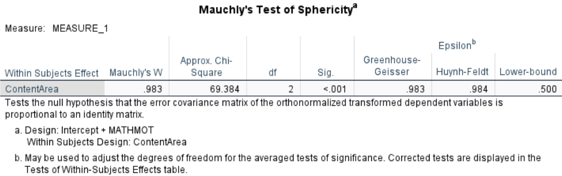
The test was significant, \(\chi^2(2) = 69.384, \, p < .001\), indicating a violation of the sphericity assumption. The variances of the differences between content areas are not perfectly equal. However, with such a large sample ( \(N > 4000\)), Mauchly’s test is extremely sensitive — even tiny deviations from sphericity can become statistically significant.
As the chapter explained, we apply corrections. As the \(\epsilon\) is above 0.75, the Huynh-Feldt correction is appropriate and will be used in the main analysis.
Box’s Test of Equality of Covariance Matrices:
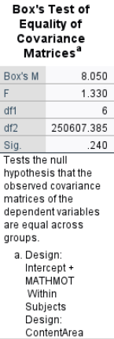
Box’s \(M = 8.050\), \(p = .240\), suggesting that the assumption of equal covariance matrices across groups is not violated.
1.1.2 Between-Subjects Factor: MATHMOT
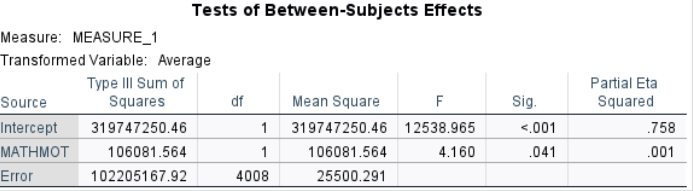
- Students with higher motivation in mathematics (MATHMOT) had significantly different scores across the math content areas overall, \(F(1, 4008) = 4.16\), \(p = .041\).
The partial \(\eta^2\) is .001, indicating that although the effect is statistically significant, the effect size is extremely small (about 0.1% of the variance explained). This reveals that large samples can make very small effects look statistically significant.
1.1.3 Within-Subjects Factor: ContentArea
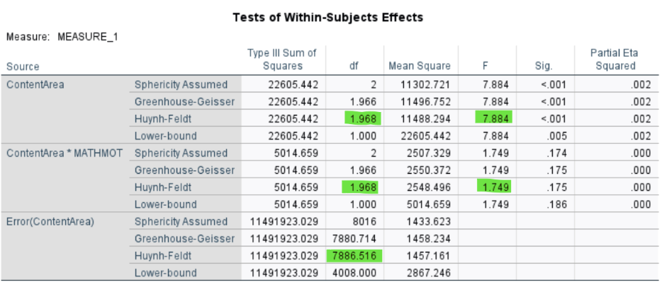
There is a significant effect of Content Area on math scores, \(F(1.968, 7886.516) = 7.884\), \(p < .001\), indicating that students’ performance varies across the three content areas.
The partial \(\eta^2\) is .002, suggesting that about only 0.2% of the variance in scores can be attributed to differences between content areas.
1.1.4 Interaction: MATHMOT × ContentArea
The interaction between MATHMOT and Content Area is not significant, \(F(1.968, 7886.516) = 1.749\), \(p = .175\). This means that although motivated students scored differently overall, their relative performance patterns across the three content areas were not significantly different from less motivated peers. In other words, motivation shifts the overall level but not the shape of the profile.
1.2 Post Hoc Comparisons
1.2.1 Visualize the Means
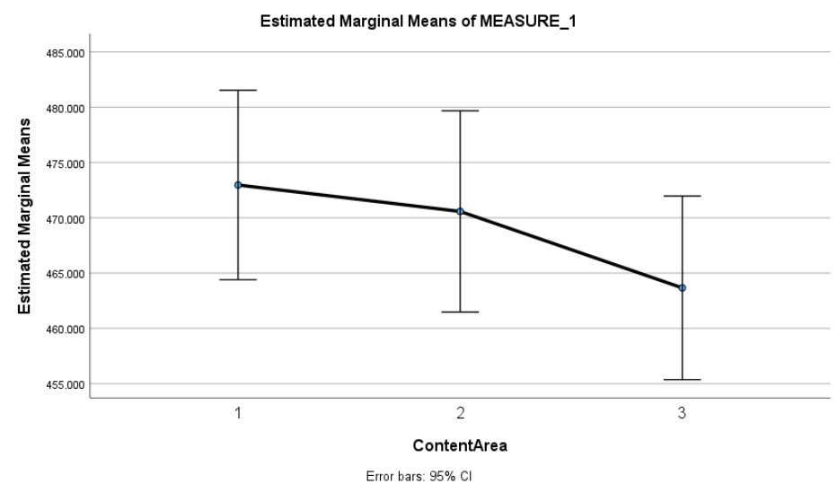
This plot shows the average math scores across the three content areas: Reasoning (1), Quantity (2), and Space & Shape (3). Students scored highest in Reasoning, slightly lower in Quantity, and lowest in Space & Shape. While these trends are observable, they should be interpreted cautiously - formal statistical tests are necessary to confirm whether these differences are statistically significant. In this case, the main effect of content area was significant, further confirming the differences suggested by the plot.
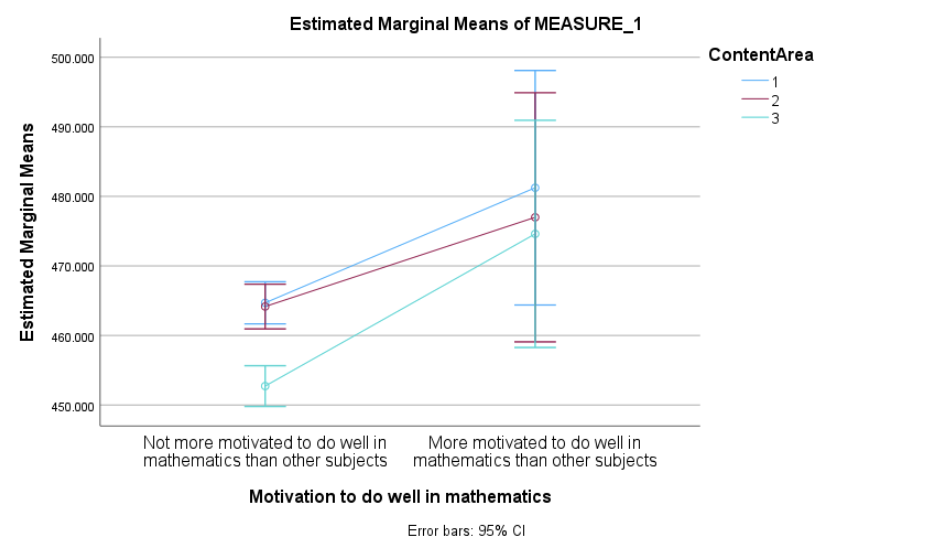
This plot shows the estimated marginal means for each content area, split by students’ motivation to do well in math. Students who reported being more motivated tended to score higher across all three content areas.
The overall performance pattern (Reasoning > Quantity > Space & Shape) appears similar for both groups, suggesting that the relative differences across content areas are not strongly influenced by motivation. This visual pattern aligns with the non-significant interaction observed in the formal tests, offering further support for that finding.
1.2.2 Pairwise Comparisons
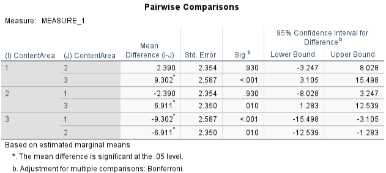
Bonferroni-adjusted pairwise comparisons showed that students scored significantly higher in Reasoning than in Space & Shape (\(p < .001\)) and significantly higher in Quantity than in Space & Shape (\(p = .010\)). However, the difference between Reasoning and Quantity was not statistically significant (\(p = .930\)). These comparisons suggest that the lowest performance was in the Space & Shape subscale, while performance in Reasoning and Quantity was relatively similar.
Note that these comparisons are based on estimated marginal means, which adjust for the between-subjects factor (math motivation) and use a pooled error term, making them slightly more conservative than raw paired t-tests.
2 ANCOVA
Now we turn to ANCOVA, where the focus is where the focus is comparing the three types of schools on math performance, while controlling for growth mindset:
**DV**: PV1MATH (overall math achievement)
**IV**: SC014Q01TA (School type: 1 - religious, 2 - non-profit, 4 - government)
**Covariate**: GROSAGR (Growth Mindset) 2.1 Running ANCOVA
Step-by-step procedure in SPSS
Click Analyze → General Linear Model → Univariate
In the Univariate dialog:
Move PV1MATH to the Dependent Variable box.
Move SC014Q01TA (school type) to the Fixed Factor(s) box.
Move GROSAGR (growth mindset) to the Covariate(s) box.
Click the “Post Hoc…” button (optional but recommended):
Select SC014Q01TA
Choose Bonferroni or Tukey for pairwise comparisons
Click Continue
(Optional) Click the “EM Means…” button (Estimated Marginal Means):
Move SC014Q01TA into the Display Means For box
Check the option Compare main effects
Select Bonferroni for pairwise adjustment
Click Continue
(Optional) Click on “Plots…”:
Drag SC014Q01TA to the Horizontal Axis box
Click Add
Select Line Chart as Chart Type
Under Error Bars, select Confidence Interval
Click Continue
(Optional) Click on “Options…”:
Check: Descriptive statistics/ Estimates of effect size/ Homogeneity tests
Click Continue
Click OK to run the analysis.
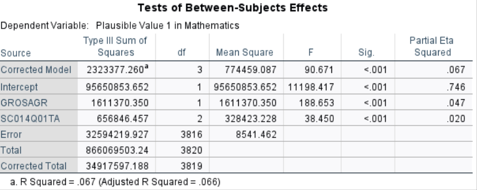
2.1.1 School Type Effect
After controlling for growth mindset, there are still significant differences in math scores between school types, \(F(2,3816)=38.45\), \(p<.001\). This means that even if students had the same level of growth mindset, school type is still associated with different mean math achievement.
2.1.2 Growth Mindset Effect (Covariate)
Growth mindset has a significant effect on math achievement, \(F(1,3816)=188.65\), \(p<.001\).
2.1.3 Pairwise Comparisons
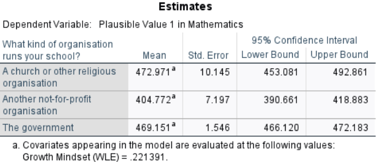
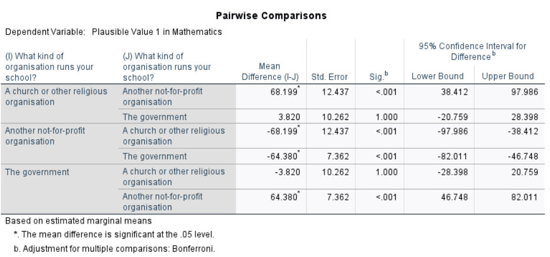
From the post-hoc comparison, after controlling for growth mindset (i.e., adjusted means):
Religious schools (\(M = 472.971\)) scored significantly higher than Non-profit schools (\(M = 404.772\)), \(p < .001\).
Government schools (\(M = 469.151\)) also scored significantly higher than Non-profit schools, \(p < .001\).
There was no significant difference between Religious and Government schools (mean difference \(= 3.82\), \(p = .93\)).
Check the One-Way ANOVA results from Chapter 10 to see how these comparisons differ before controlling for growth mindset.
2.2 Checking assumptions
2.2.1 Independence of covariate and IV
Recall that one key assumption of ANCOVA is that the covariate (growth mindset) is associated with the dependent variable (math achievement) but not the independent variable (school type). We have shown that growth had a significant effect on math achievement. Now we check whether growth mindset differs by school type.A table with numbers and letters
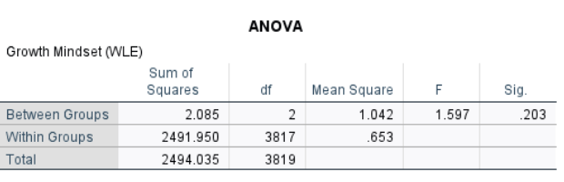
The ANOVA showed that growth mindset scores did not significantly differ across school types, \(F(2,3817)=1.597\), \(p=.203\). This indicates that the covariate (growth mindset) is independent of the independent variable (school type), upholding the assumption for ANCOVA.
2.2.2 Homogeneity of regression slopes
Another assumption of ANCOVA is no interaction between the effect of the covariate and group membership. We test this by adding an interaction term between school type and growth mindset.
Additional Step in SPSS
All steps are the same as in the standard ANCOVA procedure described above. The only change is in the Model… dialog:
After Step 2 (defining the DV, IV, and covariate), click Model…
Change the setting from Full factorial to Custom
Add the main effects:
Select SC014Q01TA → Click Main effects → Click Add
Select GROSAGR → Click Main effects → Click Add
Add the interaction term:
Ctrl+Click to select both SC014Q01TA and GROSAGR
Click Interaction → Click Add
Click Continue and proceed to run the model as usual
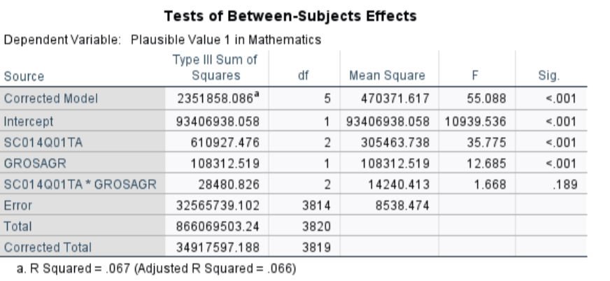
The interaction between school type and growth mindset was not significant, \(F(2 ,3814)=1.668\), \(p=.189\), indicating that the effect of growth mindset on math achievement is consistent across school types. This upholds the homogeneity of regression slopes assumption for ANCOVA.
Conclusion
This chapter explored the foundational concepts and practical applications of repeated-measures ANOVA, a powerful statistical tool for analyzing differences across multiple conditions or time points within the same group of participants. By leveraging the repeated-measures design, researchers can control for individual differences, thereby reducing error variance and increasing statistical power compared to between-subjects designs. Central to the analysis is the ability to partition variance into components attributable to between-groups effects, within-groups error, and between-persons differences, which allows for a more nuanced understanding of the data. Additionally, the chapter highlighted the importance of understanding longitudinal versus cross-sectional designs and emphasized that repeated-measures ANOVA is uniquely suited to studies involving repeated observations on the same individuals over time or under different conditions.
A critical element of this analysis is ensuring that the assumption of sphericity is met or properly addressed. Violations of sphericity, which occur when variances of the differences between all combinations of related groups are unequal, can inflate Type I error rates, leading to invalid conclusions. To address this, researchers are equipped with tools such as Mauchly’s Test of Sphericity and corrections like the Greenhouse-Geisser and Huynh-Feldt adjustments. By understanding these concepts and incorporating them into their analyses, researchers can confidently interpret the results of repeated-measures ANOVA, making it an invaluable method for studies that track changes over time or across experimental conditions. Through statistical software and adherence to methodological rigor, this chapter equips readers with the knowledge to effectively utilize this robust analytical approach.
In addition to repeated-measures ANOVA, this chapter highlighted the role of Analysis of Covariance (ANCOVA)as a valuable statistical tool for controlling confounding variables when analyzing group differences. Unlike standard ANOVA, ANCOVA incorporates covariates—continuous variables that help reduce error variance—allowing for a more precise evaluation of treatment effects. This is particularly useful in educational research, where factors like prior achievement, motivation, or socioeconomic status may influence outcomes. By statistically adjusting for these pre-existing differences, ANCOVA enhances the validity of comparisons, especially in quasi-experimental designs where randomization is not feasible. However, researchers must ensure that covariates meet key assumptions, such as independence from the treatment effect and homogeneity of regression slopes, to avoid misleading conclusions. When used appropriately, ANCOVA strengthens the ability to draw meaningful inferences, making it an essential complement to repeated-measures ANOVA in educational research.
Key Takeaways for Educational Researchers from Chapter 13
The use of repeated-measures design in educational research is crucial for examining changes in learning outcomes. Repeated-measures ANOVA is particularly useful in education research because it allows for the study of changes in learning outcomes, student engagement, or skill development over time. For example, a researcher could track the effects of different instructional strategies on student performance across multiple testing periods. By using the same participants in each condition, this design controls for individual differences, making it a powerful tool for assessing interventions and longitudinal trends in educational settings.
Controlling for individual differences enhances statistical power. A key advantage of repeated-measures ANOVA is its ability to remove variability due to individual differences, leading to increased statistical power. In educational research, where student performance can vary due to prior knowledge, motivation, or learning styles, this method helps isolate the actual effect of a key independent variable from these potential confounding effects. For instance, in a study comparing different teaching techniques, repeated-measures ANOVA ensures that each student’s unique characteristics do not confound the results, allowing for a clearer interpretation of instructional effectiveness.
When analyzing repeated measures data, ensuring that the assumption of sphericity is met is critical. A violation of sphericity occurs when the variances of the differences between time points or conditions are unequal, which can lead to inflated Type I error rates. Researchers must check for this assumption using Mauchly’s test for sphericity and apply corrections such as Greenhouse-Geisser or Huynh-Feldt adjustments if necessary. For example, if a study is evaluating student progress across multiple semesters, a potential violation of the sphericity assumption may arise when students’ score variances increase over the years (e.g., early semester scores are relatively stable, but later semesters show more fluctuation) or when the variance of score differences between Semester 1 and Semester 2 is significantly smaller than that between Semester 3 and Semester 4.
ANCOVA enhances comparisons by controlling for covariates. When studying the impact of an intervention, ANCOVA adjusts for pre-existing differences (e.g., prior knowledge, socioeconomic status, or motivation levels) to isolate the true effect of the intervention. This is essential in quasi-experimental designs commonly used in educational research where randomization isn’t feasible.
Educational researchers should use ANCOVA thoughtfully in non-experimental studies. When analyzing observational or survey data, ANCOVA can help control for confounding variables like student motivation or prior achievement. However, researchers must avoid making causal claims unless random assignment was used—otherwise, differences may reflect pre-existing group characteristics rather than true treatment effects.
Key Definitions from Chapter 13
Analysis of Covariance (ANCOVA) is a statistical technique used to evaluate whether there are significant differences between groups on a dependent variable while statistically controlling for the effects of one or more continuous variables (called covariates).
A covariate is a continuous variable that is included in the analysis to account for variability in the dependent variable that is not directly related to the independent variable(s). By controlling for the covariate, ANCOVA provides a clearer understanding of the relationship between the independent variable(s) and the dependent variable.
A repeated-measures ANOVA is used to determine whether there are significant differences between three or more related groups or measurements taken from the same participants under different conditions, at different time points, or across repeated trials.
Sphericity refers to the condition where the variances of the differences between all combinations of related groups (levels of the independent variable) are equal.
Check Your Understanding
What is the key advantage of using a repeated-measures ANOVA?
It eliminates the need for a dependent variable.
It reduces error variance by accounting for individual differences.
It allows for the inclusion of multiple dependent variables.
It does not require any statistical assumptions.
What does the term “sphericity” refer to in the context of repeated-measures ANOVA?
Equal variances within each group.
Equal sample sizes across groups.
Equal variances of differences between all combinations of related groups.
Equal means across all groups.
What is the recommended post hoc procedure for a repeated-measures ANOVA to control for Type I error?
Tukey’s HSD
Bonferroni correction
Fisher’s LSD
Scheffé test
What does a significant result in a repeated-measures ANOVA indicate?
All group means are equal.
The dependent variable is unrelated to the conditions tested.
The assumptions of sphericity have been violated.
There is a difference in at least one pair of group means.
What does “partial eta squared” (\(\eta^2_P\)) represent in repeated-measures ANOVA?
The total variation in the dependent variable.
The proportion of total variance explained by between-groups effects after accounting for between-persons variance.
The difference between the group means.
The degree of correlation between independent and dependent variables.
What is the role of a covariate in ANCOVA?
To control for variability in the dependent variable that is unrelated to the independent variable(s)
To act as an additional independent variable
To replace the independent variable in the model
To reduce between-group variance